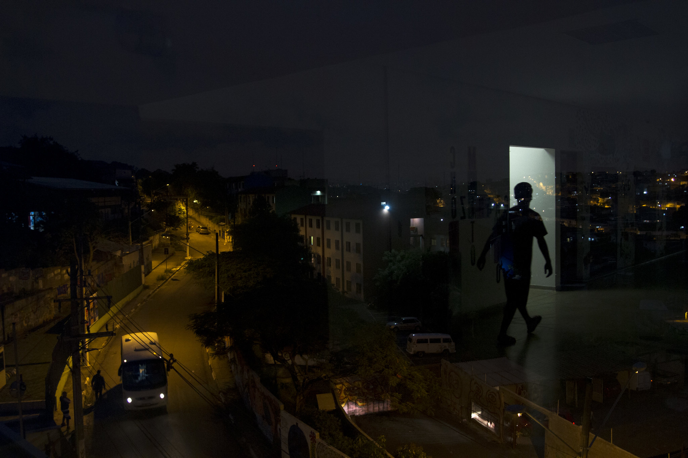
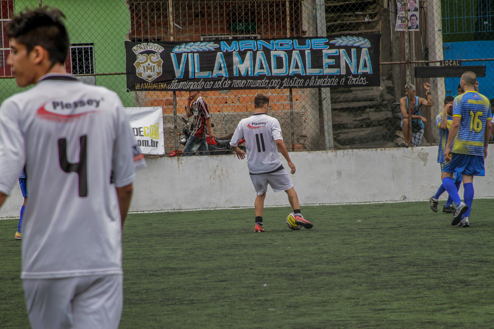
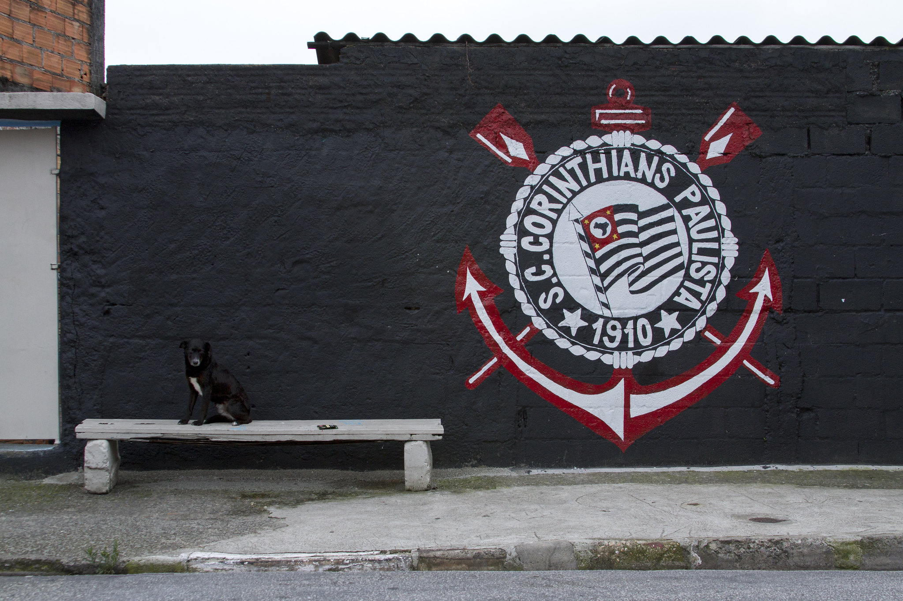

Assim como explicado no índice o "conto do mês" é uma produção literária/textual de algum aluno do Sena Lapa Tito. Causa queira saber mais clique aqui. A proposta do mês foi uma produção literária a partir de imagens do flickr com o tema base de vivência nas periferias.
São 4 da manhã, João Vinícius acorda cansado, o estomago ronca e ele lembra que os dias não têmsido nada fáceis, os serviços defaxina da mãe diminuíram muito, quase não pagam o básico pra casa, ele sem saber o que fazer abandonou a escola e começou a trabalhar como jovem aprendiz no centro da cidade, mas ainda nem recebeu o primeiro salário, mas o que João realmente almeja são osgrandes gramados do futebol brasileiro, desde pequeno o garoto é bom de bola, mas a condição financeira não ajuda, a chuteira mal faz o serviço, já que o furo no lado do dedão deixa tudo impossível. Enfim, as coisas nem sempre foram tão difíceis, “que falta que o pai faz” João sussurra consigo mesmo. Ele finalmente se levanta e vai até a mesa, já são 5:00, “droga, vou me atrasar!”, a mãe já havia saído de casa, deixou o café pronto ao lado de uma única e última bolacha “água e sal”, ele come rapidamenteenquanto se arruma, sai correndo pra não perder o ônibus das 5:15, e mesmo com toda a fome cumprimentacom um sorriso no rosto o motorista, senta-se e espera o ponto do seu trabalho chegar, “pelo menos a viagem é longa e dá pra dormir” é o que João fala consigo.
Depois do longo e exaustivo dia de trabalho ele se sentana calçada pra esperar o ônibus enquanto coloca a chuteira rasgada, nesse mesmo momento um garoto de aparente classe média-alta passa por elecom um grupo de amigose debocha, ele já havia visto o garoto em algum lugar, ele se lembra de tê-lo visto no clubinho do Corinthians sempre que passava pra admirar, o garoto continua zombando, mas ele não retruca, finge não escutar, foi ensinado pela mãe que conflitos nunca resultam em nada bom,ele guarda a raiva dentro dele e jura usar ela como um empurrão pra conseguir alcançar seus objetivos, quando finalmente o ônibus chega ele entra e vai pro treino no campinho do Mangue Vila Madalena, quase chega atrasado pra partida amistosa que acontece toda sexta, começando o jogo ele como sempre domina o campinho, não tem quem pare ele, com a bola aos pés ele parece voar sobre o pequeno e barrento campinho, ele vai levando a bola e driblando os outros garotos como se fosse completamente simples, dá um belo chute de fora da área, e...GOOOOL! Que belo gol o garoto faz, pro seu azar a chuteira termina de rasgar, quando olha pro pé já tocando os rasos e poucos gramados do campinho ele não sabe o que fazer, “Droga, minha chuteira já era...não tenho grana pra comprar outra, o que eu vou fazer agora?”, ele sai do campo irritado e triste ao mesmo tempo, “nem mesmo jogar eu consigo agora porr...”, de repente um sujeito de roupa social para ele e pergunta “E aí garoto? Vi que você tem um talento nas pernas, parecia uma águia dentro de campo...”, o mesmo sujeito olha assustado para os pés do garoto ao ver a chuteira rasgada, depois disso ele muda um pouco a abordagem “...Aparentemente as coisas andam difíceishein...sei bem como é, já passei por isso, é o seguinte garoto eu sou olheiro do Corinthians aqui da região, e olha...faz tempo que não vejo alguém jogar assim, pega esse cartãozinho e esteja lá daqui a15 dias exatamente 8:00...”, o sujeito se vira e vaiembora, João sem entender nada olha o horário, já são 19:00, ele corre pra casa com um sorriso no rosto,ele tem a chance de ouro nas mãos, mas ainda vai precisar batalhar por ela.
Chegando em casa todo feliz e já descalço ele chama a mãe com uma baita alegria, a mãe sem entender muito exclama “Fale logo garoto! Já estou ficando ansiosa”, após dar a notícia a mãe abre um grande sorriso e fala “que felicidade meu garoto, eu sempre soube que você conseguiria”, mas a mesma felicidade não dura muito, quando ela vê a chuteira já completamente rasgada nas mãos do garoto a feição muda completamente, o garoto também muda de expressão ao entender o rosto da mãe, “É, só tem esse problema, será que tem como a gente comprar uma chuteira nova?”, a mãe se volta a lavar a louça e diz “Não tem como meu filho...”, o garoto rapidamente tenta falar “Mas mãe...” e é interrompido logo em seguida pela mãe, “Não João, não vai dar, você sabe como andam as coisas, me desculpa meu filho...”, ela então desliga a torneira e vai para o quarto, onde fecha a porta, João escuta a mãe chorando, mas nem tenta intervir, ele sabe que as coisas não vão nada boas, triste e decepcionado se deita na cama, com os olhos quase lacrimejando ele pergunta bem baixinho “O que será que eu fiz para as coisas serem assim... tenho a chance da minha vida e não vou poder batalhar por ela...”, ele joga a chuteira na parede, que termina de se rasgar se separando em dois pedaços, “AGORA NEM JOGAR EU POSSO, DROGA DE VIDA!...”, se deita chorando e cai no sono.Os dias se passaram e mais cabisbaixo o garoto ficava, faltando 5 dias pra peneira do Corinthians ele deitado no seu quarto depois de mais um dia de trabalho, olha pra foto do pai, sempre se inspirava quando lembrava do pai, e dessa vez não foi diferente, ele se levantou enquanto olhava pra foto, olhou pro lado e viu o par de chuteiras rasgadas, pensou consigo “Se o pai tivesse aqui ele não ia me deixar desistir, mesmo que as coisas estejam ruins eu não posso nunca parar”, olhou pra foto por alguns segundos, como se sentisse o pai falando com ele, falou bem baixinho enquanto chorava “...eu jurei pra você que eu ia cuidar da mãe...não posso voltar atrás com a minha palavra...as coisas estão difíceis,mas nunca foram fáceis, então por que eu vou desmotivar logo agora...”, secou aspoucas lágrimas, respirou bem fundo e pegou a chuteira, com o pouco que sabia pegou uma linha e uma agulha e foi pra mesa da cozinha costurar a chuteira, sua mãe viu a cena chegando de repente, tomou a chuteira e o kit de costura da mão do garoto, ele já ia reclamar quando ela disse “...deixa que eu faço isso meu filho...”, abraçou a mãe bem fortee murmurou no ouvido dela “eu vou fazer dar certo mãe...”e foi pro quarto se arrumar pra treinar no campinho. Quando chutava o dedão doía, a chuteira também já estava pequena, mas a determinação era grande demais pra sentir qualquer dor.Os dias se passaram e o dia da “peneira” chegou, eram 6:00 e o garoto já estava de pé se arrumando e pronto pra ir, ainda tinha de pegar 2 ônibus, se despediu da mãe e foi pro ponto, durante a viagem de ônibus só conseguia pensar no pai e na mãe, a ansiedade aumentava, quando chegou no ponto na frente do CT do Corinthians ele desceu e entrou pro teste. Lá ele viu aquele garoto que o menosprezou e zombou dele no ponto de ônibus, viu o mesmo garoto chegando em carro caro, mais um motivo pra vencer, os times foram separados eo jogo começou, o jogo estava tenso, quando ele menos esperava surgiu uma disputa de bola com aquele garoto, ele correu, avançou e PÁ! Eles se chocaram na disputa de bola, despois de levantar ele olhou para os pés “Droga...a costura estourou...”, ele continuou jogando, mesmo com a dor no pé, de repente...”GOOOLL!” porém do time inimigo, quando ele olhou no relógio só faltavam 5 minutos, “Droga...não vai dar tempo, que droga...”, ele respirou fundo, olhou pro céu e disse “me ajuda pai...”, o juiz apitou e o jogo voltou, ele correu o máximo atrás da bola, interrompeu o passe de bola inimigo, por um momento as coisas ficaram lentas, ele olhou para o relógio e tinham apenas 30 segundos, ele corria tanto com aquela bola, todos ficaram impressionados, era como uma águia, ele voava com a bola aos pés, chegou perto da área, driblou mais um...10 segundos no relógio...driblou mais um...9 segundos...correu e passou a linha do meio de campo...8...7...6...5...ele já estava do lado da área...4...3...ele chuta com toda a sua força, o mesmo chute que havia usado pra impressionar o olheiro...2 segundos...a bola faz uma curva incrível e...1 segundo...GOOOOOOOL!!, João caiu sobre seus joelhos sem reação, seus companheiros de time corriam e gritavam comemorando em sua direção, ele acabava de realizar um milagre. O jogo acabou e agora era hora do resultado da peneira, apenas 1 jogador de cada posição seria selecionado, na hora da posição de atacante ser anunciada, posição na qual João jogava, o seu coração batia tão forte...o treinador da base do Corinthians encara os 4 atacantes que disputavam a vaga, o silêncio durou alguns segundos e então...”Entreos 4 competidores na posição de atacante, o selecionado foi João Vinícius”, João caiu sobre seus joelhos enquanto chorava de alegria, olhou pros céus, lembrou de seu pai e de ter pedido ajuda à ele, então disse “Obrigado pai...mesmo aí do céu o senhor me deu forças pra continuar e conseguir”, na saída do CT ele encontrou o garoto que o havia menosprezado, olhou pra ele disse “Nunca julgue os seus inimigos, você não sabe o que eles passam e nunca sabe o que a raiva e o foco deles pode fazer”. Chegando em casa com o sorriso no rosto ele abraçou a mãe e disse “EU CONSEGUI MÃE! EU CONSEGUI! Vou tirar a gente disso aqui!”.
O tempo passou, exatamente 1 ano desde então, João assinou um contrato com o Corinthians como jogador de base, as coisas melhoraram em casa efinalmente ele foi convocado para a equipe titular, sua estreia está prestes a ocorrer, o seu primeiro jogo profissionalmente, os rumores correm que ele é uma grande promessa do futebol brasileiro. Depois de um jogo puxado faltavam10 minutospara terminar, João estava pronto para receber a bola na ponta direita do campo, ele recebe o passe e corre como nunca, olha para a quadra e vê um companheiro de time, chuta com toda a sua força fazendo o cruzamento, o jogador da área cabeceia a bola e....”É GOOOOOLLLL DO CORINTHIANS, nos últimos minutos um cruzamento incrível da promessa corintiana, João Vinícius, para um cabeceio espetacular...” diz o narrador, a torcida vibrava e pulava em um barulho ensurdecedor, João não comemorou ou esboçou reação ele apenas olhou ao redor impressionado com o estádio tremendo com a força e barulho daqueles torcedores, ele apenas fecha os olhos e lembra de tudo que passou pra chegar ali, lembra de sua mãe que estava ali no estádio agora, e do seu pai, que foi sua inspiração pra tudo isso.
Explicação da interpretação por trás da produção
Palavras do autor: "Pra começar eu escolhi a primeira imagem, nela podemos ver umaparentemente garoto saindo de casa de madrugada pra pegar o ônibus, ela foi escolhida por mimporque acho que ela encaixa bem com o tipo de história que quero passar, uma história de superação, de um garoto vindo das comunidades e que se superou na vida contra todas as expectativas. As duas outras imagens, um de vários jovens jogando futebol em um campinho de um clube chamado “Mangue Vila Madalena”, a terceira é um muro pintado com a logo do clube de futebol “Corinthians” ao lado vemos um cachorro em cima de um banco, elas juntas formaram uma boa composição tanto entre si quanto juntamente com a primeira, quando vi elas todas juntas a primeira coisa que me veio à mente foi a história de superação de um garoto apaixonado por futebol, que surge como um “craque da bola” nos campinhos do “Mangue Vila Madalena” e conquista o topo do futebol brasileiro, chegando até um dos maiores clubes nacionais, o Corinthians."